|
5.
Process Improvement
5.5. Advanced topics 5.5.9. An EDA approach to experimental design 5.5.9.9. Cumulative residual standard deviation plot
|
||||||||||||||||||||||||||
| Design table in original data units |
As for the mechanics of interpolation itself, consider a continuation of
the prior k = 2 factor experiment. Suppose temperature T
ranges from 300 to 350 and time t ranges from 20 to 30, and the
analyst can afford n = 4 runs. A 22 full factorial
design is run. Forming the coded temperature as X1 and the
coded time as X2, we have the usual:
|
|||||||||||||||||||||||||
| Graphical representation | Graphically the design and data are as follows:  | |||||||||||||||||||||||||
| Typical interpolation question |
As before, from the data, the prediction equation is
|
|||||||||||||||||||||||||
| Predicting the response for the interpolated point |
The important next step is to convert the raw (in units of the
original factors T and t) interpolation point into a
coded (in units of X1 and X2) interpolation point. From
the graph or otherwise, we note that a linear translation between
T and X1, and between t and X2 yields
T = 350 => X1 = +1
|-------------|-------------|
-1 ? 0 +1
300 310 325 350
which in turn implies that
t = 30 => X2 = +1
|-------------|-------------|
-1 0 ? +1
20 25 26 30
thus
|
|||||||||||||||||||||||||
| Graphical representation of response value for interpolated data point |
Thus
|
|||||||||||||||||||||||||